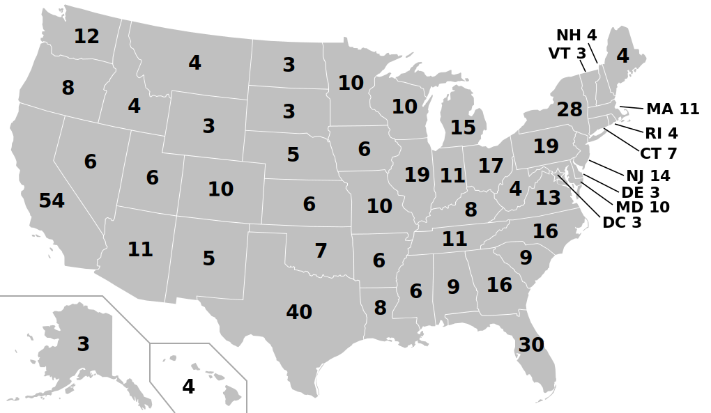

Voting rates are higher among those with higher socioeconomic status (SES):
Income
Occupational prestige
Education
Other factors affecting likelihood of voting, aside from SES:
Age
Race and ethnicity
Potential voters must register in advance in most states.
National Voter Registration Act (“Motor Voter”).
Recent voter identification laws may lower turnout.
Regstration and voting is optional.
Elections normally held on workdays in most states.
Limited opportunities for early or absentee voting.
All voting by mail only in a few states.
Decline of social connectedness.
Turnout depends on mobilization by parties and campaigns: get-out-the-vote (GOTV) efforts.
Turnout lower in midterm and off-year elections.
Turnout lowest in primary elections and runoffs.
Frequent elections and lengthy ballots may lead to voter fatigue.
Most people do not participate in politics beyond voting.
Donating to, working on political campaigns.
Contacting elected officials.
Attending rallies and political meetings.
Participating in strikes.
Boycotting businesses or government services.
Attending political protests.
Political violence, including armed conflict.
Paradox of voting since chances of affecting election outcomes are small.
Costs of voting appear to exceed the expected benefits.
However, sense of fulfilling one's civic duty may be considered a benefit.
Goal of presidential candidates: earn party nomination by capturing a majority of the delegates available.
Parties allocate delegates to states and territories using complex formulas, including party support and population.
Minor parties tend to use state conventions to choose delegates to national convention.
Some states use precinct caucuses to choose delegates to county, regional, and state conventions who then choose delegates for major parties. Notably, Iowa.
Most states use primary elections to select delegates for major parties.
Open primaries allow any registered voter to participate, regardless of party affiliation.
Semi-open primaries (or modified open primaries) are limited to registered voters from the party and independent voters.
Closed primaries are limited to registered voters from the party only.
Democrats require proportional allocation of delegates; generally candidates must get 15% of the vote to receive any delegates.
Republicans tend to favor winner-takes-all rules: whoever gets the most votes statewide wins all delegates available.
Both parties reserve some delegate positions for party leaders and elected officials (PLEOs); Democrats tend to have many more of these superdelegates.
Democrats require quotas of women, minorities, and young people among delegates; Republicans don't.
Discontent with Democratic Party nomination process boiled over at the 1968 Democratic National Convention in Chicago.
Popular anti-war candidate Eugene McCarthy bypassed for vice president Hubert Humphrey, favored by party leaders.
After election, Democrats formed the McGovern-Fraser Commission to reform their nomination process; changes in state laws led to more primaries for Republicans too.
Front-loading of primary calendar has stretched out the presidential nomination campaign; Iowa caucus now in early January.
Privileged positions of Iowa and New Hampshire; neither state is very representative of Democrats' base in particular.
Expense of campaign has led to fundraising starting years before election; the invisible primary contributes to the “permanent campaign.”
President chosen via the Electoral College:
Each state has at least three electors.
48 states and DC use “winner-takes-all” rule:
Candidate with most votes gets all electoral votes.
Maine and Nebraska are different:
Winner in each congressional district gets one electoral vote each; statewide winner gets two more.
If no majority (winner needs 270 of 538): president chosen by House, VP chosen by the Senate.

Electoral College system means candidates focus their campaigns on a few swing states (or battleground states) and ignore most of the country.
May distort politics by causing parties to focus on interests of battleground states rather than nation as a whole.
Candidate with most popular votes does not necessarily win the electoral vote.
Senators elected statewide (“at large”) since ratification of 17th Amendment; only face reelection every six years.
House members elected from districts every two years (except in small states with only one seat, where they too are elected “at large”).
Most states use direct primaries to choose major party nominees; some states use caucus systems.
Most states use plurality elections: candidate who receives the most votes wins the seat.
Directly elect the president?
Plurality winner (e.g. National Popular Vote Compact).
Alternatives: run-off voting; instant run-off; approval.
Proportional Representation in Congress?
Most important factor is party identification (or partisanship): one's sense of attachment to one of the two major parties.
Political scientists use seven-point scale.
“Strong” partisans particularly loyal.
Voters' partisanship can change over time.
Partisanship appears to “update” based on changing political conditions and circumstances.
Retrospective voting: evaluating candidates based on past performance.
Economic voting in particular.
Relatively little issue voting due to information costs. More likely for salient or valence issues.
Candidate attributes: “character”; temperament; appearance; personality.
Building a “war chest” is important early on, before contests start: the invisible primary.
Biggest factor in nomination contests appears to be momentum.
Other factors matter too: party factions, media coverage and “expectations,” etc.
Four key factors identified by political scientists forecasting elections:
Partisan breakdown of the electorate.
Approval ratings of the incumbent party's president.
State of the economy leading up to the election.
Incumbency.
The text and narration of these slides are an original, creative work, Copyright © 2000–25 Christopher N. Lawrence. You may freely use, modify, and redistribute this slideshow under the terms of the Creative Commons Attribution-Share Alike 4.0 International license. To view a copy of this license, visit http://creativecommons.org/licenses/by-sa/4.0/ or send a letter to Creative Commons, 444 Castro Street, Suite 900, Mountain View, California, 94041, USA.
Other elements of these slides are either in the public domain (either originally or due to lapse in copyright), are U.S. government works not subject to copyright, or were licensed under the Creative Commons Attribution-Share Alike license (or a less restrictive license, the Creative Commons Attribution license) by their original creator.
The following sources were consulted or used in the production of one or more of these slideshows, in addition to various primary source materials generally cited in-place or otherwise obvious from context throughout; previous editions of these works may have also been used. Any errors or omissions remain the sole responsibility of the author.